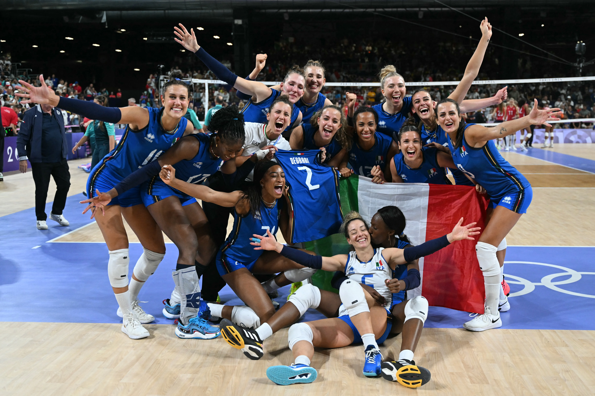
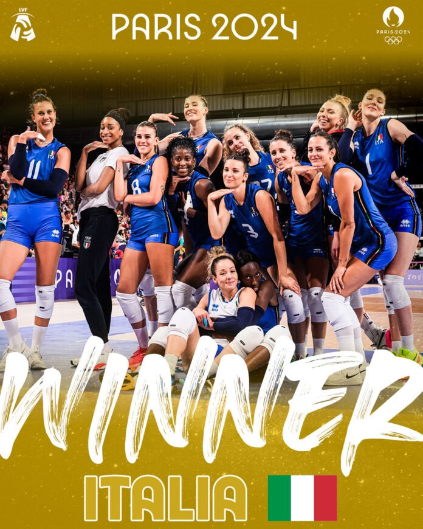

Questo sito racconta il percorso della Nazionale italiana femminile di pallavolo alle Olimpiadi di Parigi 2024, concluse con una storica medaglia d’oro.
L’Italia ha disputato un torneo quasi perfetto, battendo avversarie molto forti e arrivando fino alla finale contro gli Stati Uniti, vinta con un netto 3-0.
Nelle varie pagine puoi trovare il cammino della squadra, le partite principali, le protagoniste, le curiosità e l’importanza di questo successo per lo sport italiano.
Indice del sito
Da qui puoi scegliere la sezione che vuoi visitare.
Panoramica torneo
Racconta in generale il cammino dell’Italia dalle prime partite fino alla finale.
Apri torneoGironi
Approfondisce la fase a gironi contro Repubblica Dominicana, Paesi Bassi e Turchia.
Apri gironiQuarti di finale
Racconta la vittoria contro la Serbia, che ha portato l’Italia in semifinale.
Apri quarti di finaleSemifinale
Spiega la partita contro la Turchia e il passaggio storico alla finale olimpica.
Apri semifinaleProtagoniste
Presenta tutte le giocatrici della rosa italiana, i ruoli, i premi e il contributo.
Apri protagonisteCuriosità
Raccoglie frasi, interviste, premi personali e il famoso torneo della baguette.
Apri curiositàUna vittoria storica
Il percorso dell’Italia a Parigi 2024 rimane uno dei momenti più importanti della storia della pallavolo italiana.
